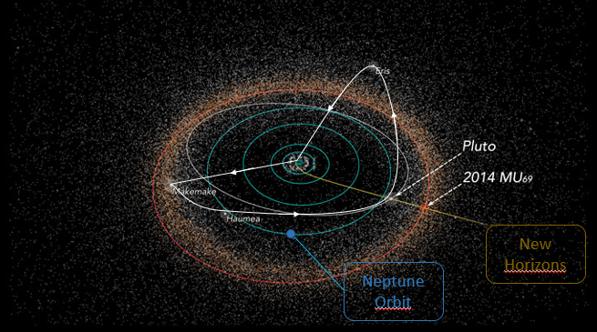

We’re Offering these Popular Services
After leaving Earth we will travel for 3 years through our wonderful Solar System, passing close to Mars and Jupiter. This will help us in speeding our spaceship to reach the final destination, the Trans-Neptunian Objects. Once we arrive, there will be exploration tours to Makemake, Haumea, Pluto and Eris. After all of the amazing experience, we start our 3 years journey back to our home planet!
Our Spacecraft will connected to all Space Network available in Solar System. Most of the journey time we will use DSN (Deep Space Network) which uses High Frequency Microwaves and is built with several antennas and structures placed in Earth, Moon and Mars. You will be in contact to your friends and relatives during all the Trans Neptunian Spaceway.
The most massive Dwarf Planet in our Solar System. Éris' surface has the greatest concentration off ice and methane gas, giving the effect that it shines. With this effect, selfies are the best option!
(Duration: 3 hours)
Since the first fly-by that a humankind object made 30 years ago with our (still operative!) New Horizons Probe, more and more data has been collected and researched about Pluto. Now, the heart of this amazing dwarf planet can be explored by anyone. Even You.
See one of its five moons closer and big like any other moon in our Solar System. It is the largest satellite relative to the planet it orbits in our solar system:
Imagine you jump about 10 m high and land in another region some km far? This is only possible in the incredible dwarf planet Haumea, where the day duration is 4 Earth hours and you may fell like in a rotating attraction of a really big amusement park!!
Duration: 2 Haumea’s day (8 hours)
If you are an entrepreneur who intends to explore resources, in a sustainable way, far from the Earth, looking for opportunities that would be impossible near here, came with us to Makemake, where we could fuel the TNS spacecraft with incredible pellets of frozen methane to generate the energy to back to our planet. We offer credits for the explorers and entrepreneurs who helps us in this important mission!!